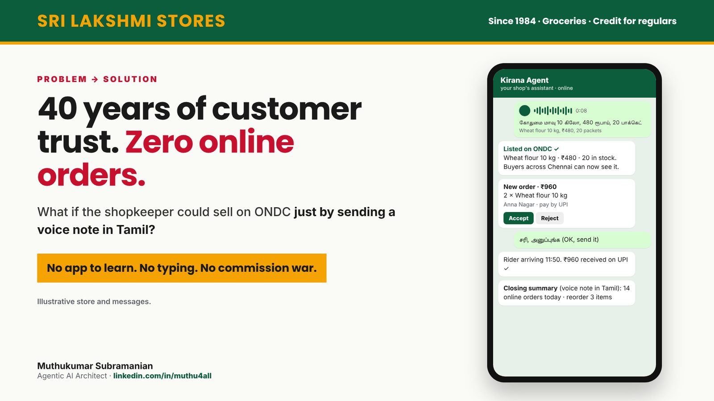

Every Kirana Store Could Have an AI Agent. ONDC Is the Missing Plumbing.
By Muthukumar Subramanian · Agentic AI Architect

The kirana at the end of your street knows your name.
It knows your usual rice, keeps your favourite biscuits in stock, and gives you credit till the end of the month without a single form.
It has also probably never received an online order.
Meanwhile, a big app that doesn't know you at all gets your order in two taps.
That isn't because the shopkeeper isn't smart enough. It's because selling online was designed for people who sit at computers, type product descriptions and manage dashboards. The shopkeeper has a counter full of customers and about forty seconds between each of them.
👉 [IMAGE: B-day01-2-in-article-kirana-gap.png]
Caption: The kirana already wins on trust. It only loses online.
The plumbing exists. It just leaks.
India has built something remarkable: ONDC, an open, government-backed network where any seller can be discovered by any buyer app. It's very much alive. It handled 218 million transactions in FY 2025-26 and crossed 500 million in total this July. Combined with UPI for payments, the rails are in place.
But let's be honest about where those transactions come from. Most of the growth is metro tickets, auto rides and logistics. Retail is the weak spot. Shopping orders peaked in late 2024 and fell once the discounts buyer apps were running on were cut back. Many sellers are listed but not really active, with half-filled catalogues and stock that's never updated.
So why aren't kiranas flooding onto it?
Because the last mile isn't technology. It's the shopkeeper's time and language. Listing products, updating prices, accepting orders and tracking stock all still assume typing, English and an app. That's where most small sellers stop.
The fix: an AI agent that works like a shop assistant
Imagine this instead.
At 9 AM, the shopkeeper sends a WhatsApp voice note in Tamil: "Wheat flour, 10 kg, 480 rupees, 20 packets."
The agent understands it, creates the listing and puts it on ONDC. Buyers across the city can now see it.
At 11:30, an order arrives. The agent asks: "2 packets, ₹960, Anna Nagar. Accept?" The shopkeeper replies "Sari, anuppunga" (OK, send it), and the agent handles the packing list, the rider and the UPI confirmation.
At 4 PM: "Only 3 packets of flour left. Reorder from your usual supplier?"
At closing time, a voice note in Tamil: today's online orders, sales and what to reorder.
No app to learn. No typing. The shopkeeper never leaves the counter.
👉 [GIF: B-day01-4-in-article-a-day-at-the-shop.gif]
Caption: A day with the Kirana Agent. The shopkeeper never types.
How it works under the hood
→ Speech to text in Indian languages, using models like those available through Bhashini
→ An LLM that understands messy speech and turns it into structured items
→ Plain code for anything that counts: stock, prices and totals. Prices change only when the owner confirms.
→ A seller app on ONDC that the agent works through
→ UPI so the money goes straight to the shop
👉 [IMAGE: B-day01-3-in-article-how-it-works.png]
Caption: A voice note goes in. An ONDC order comes out.
What the agent should NOT do
This matters. The agent never changes prices on its own, never gives credit, and never accepts orders it isn't sure the shop can fulfil. Credit, relationships and judgement stay with the shopkeeper. The agent handles the clicking; the owner keeps the trust.
The hard parts
I'd be selling you a fantasy if I stopped there.
→ Listing isn't selling. Putting a kirana on ONDC doesn't bring buyers. The buyer apps still have to win customers, and some have pulled back from retail.
→ Delivery has to make sense. A ₹960 order across town needs a rider at a price that leaves the shop some margin. Returns and complaints need an owner too.
→ The agent will mishear. Noisy shops, mixed Tamil and English, "two" versus "too". Every order still needs a one-tap confirmation from the owner.
→ Builders will feel the friction. If you've tried developing on ONDC, you know the test environment and documentation lag behind the live network.
ONDC seems to be heading the same way
Here's what makes me more confident, not less. In February, ONDC launched DigiDukaan, which has already brought 10,000+ kiranas onto the network to order stock from brands and distributors. And in its own FY 2025-26 report, ONDC says it's building "Vyapar LM", a commerce AI for a future "beyond apps", for people regardless of digital literacy or language.
That's exactly the agent this article describes. The network is starting to admit what kiranas have always known: the interface was the problem, not the shopkeeper.
The opportunity
This is one of the biggest "AI for Bharat" opportunities I can see:
→ Seller apps that add a voice agent will win the next wave of small sellers
→ Indian-language AI startups have a real, paying use case
→ FMCG distributors get live demand data from thousands of shops
→ Banks and NBFCs can offer working capital based on real order history
The big platforms brought kiranas a competitor. AI agents on open rails can bring them customers.
Your turn 👇
Would the shopkeeper on your street use this? What's the real blocker: trust, delivery, or habit?
If you know a founder building for Bharat, tag them. This one is wide open.